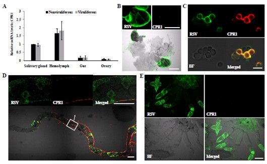

近日，我室王锡锋团队最新研究发现，灰飞虱的一种表皮蛋白参与到传播水稻条纹病毒的过程，传毒机制的解析将有助于制定病毒控制的新策略。相关研究成果于8月1日在线发表在蛋白组学领域权威期刊《分子与细胞蛋白组学（Molecular & Cellular Proteomics）》上。 水稻条纹病毒（RSV）引起的水稻条纹叶枯病对水稻生产造成严重的危害。该病毒由灰飞虱以持久增殖方式传播，病毒可在灰飞虱体内生存，繁殖并能经过昆虫卵传播至后代昆虫体内。一直以来对学术界对RSV如何在灰飞虱体内生存尚不清楚。研究人员基于酵母双杂交膜系统筛选到与RSV核衣壳蛋白互作的大量灰飞虱蛋白为基础，从中选取了一种新的灰飞虱表皮蛋白CPR1进行了传毒功能的深入研究。首先克隆了CPR1的全长基因，并利用免疫共沉淀进一步验证了CPR1与RSV pc3存在显著的互作，然后通过酵母双杂交和pull down技术明确了CPR1与RSV pc3互作的结构域。qRT-PCR检测发现CPR1在灰飞虱的血淋巴内积累量最高，同时利用激光共聚焦显微镜观察到CPR1与RSV在灰飞虱的血细胞内完全共定位。为了进一步明确CPR1的传毒功能，本研究又运用RNAi技术抑制了CPR1的表达，发现RSV含量在灰飞虱的血淋巴和唾液腺内显著下降，同时传毒率也下降到21%。这表明CPR1与RSV的结合可能是帮助病毒逃避了寄主血淋巴的免疫作用从而保护病毒不被降解。 该研究得到了国家973项目和国家自然科学基金的资助。刘文文博士为第一作者，王锡锋研究员为通讯作者。
